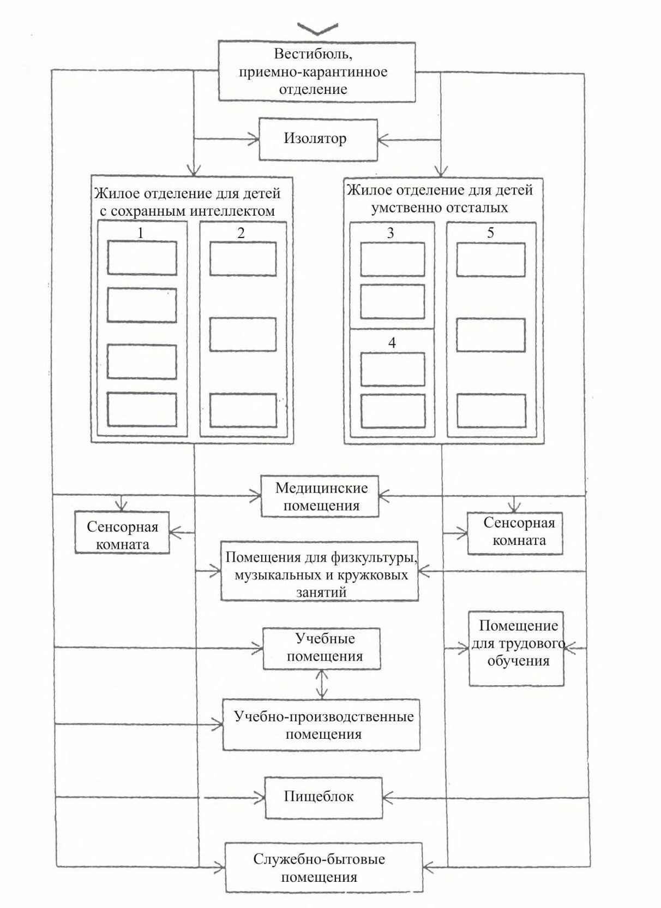
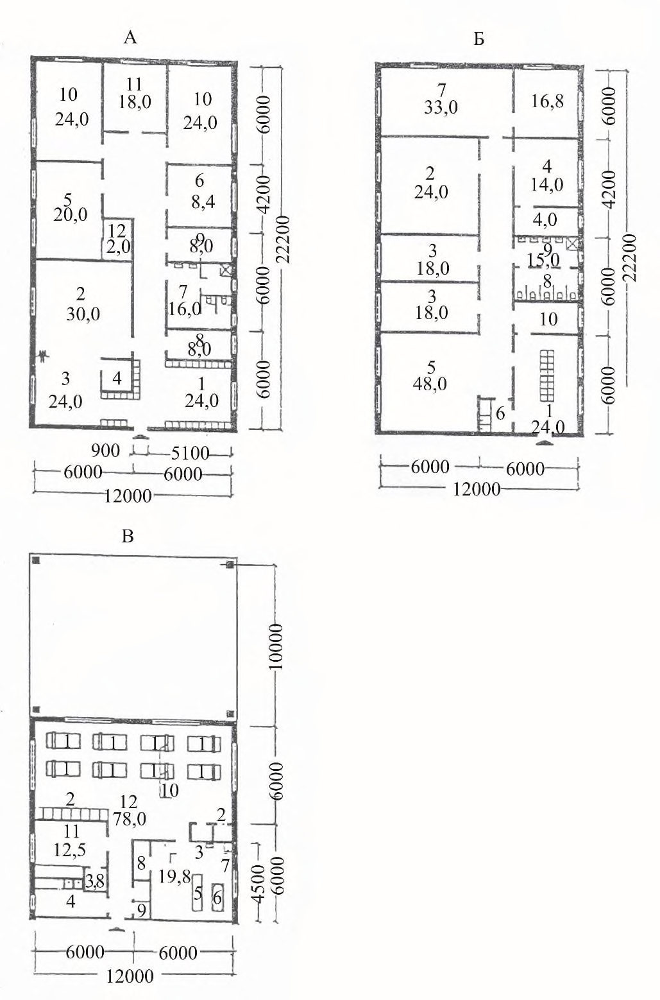
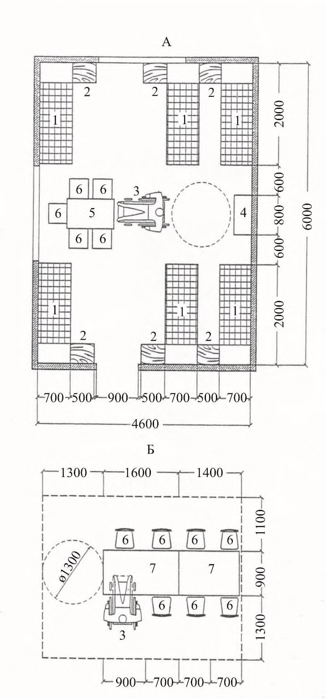
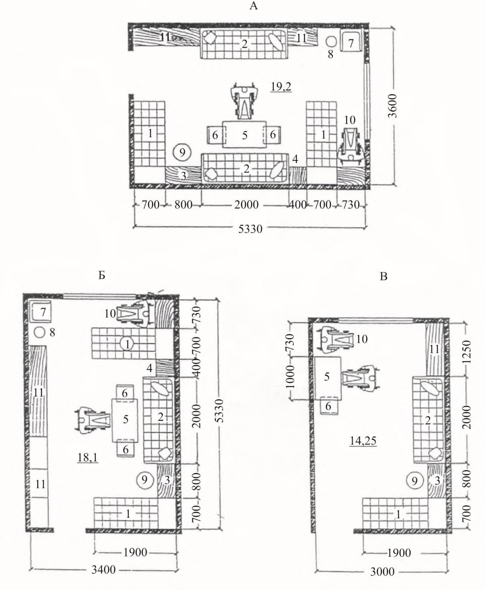
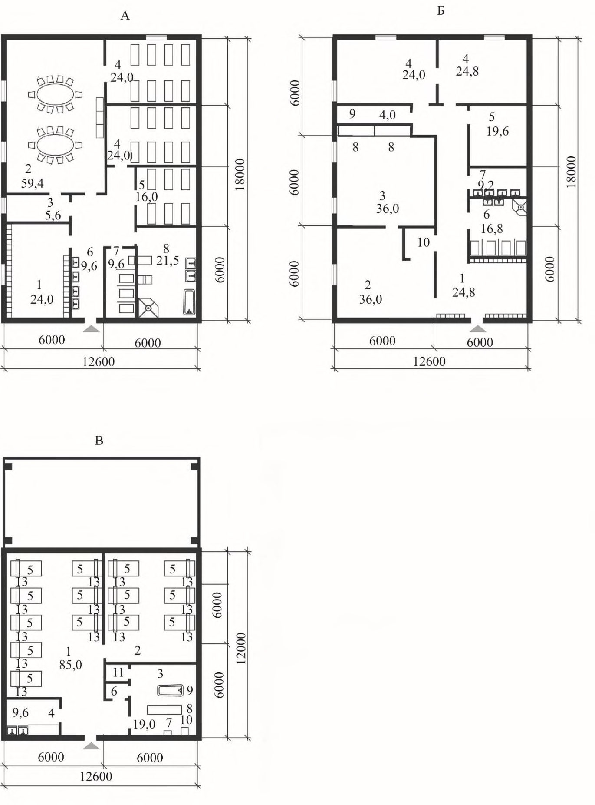
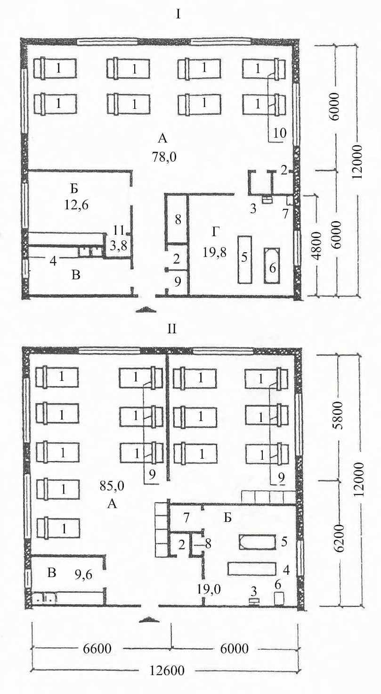
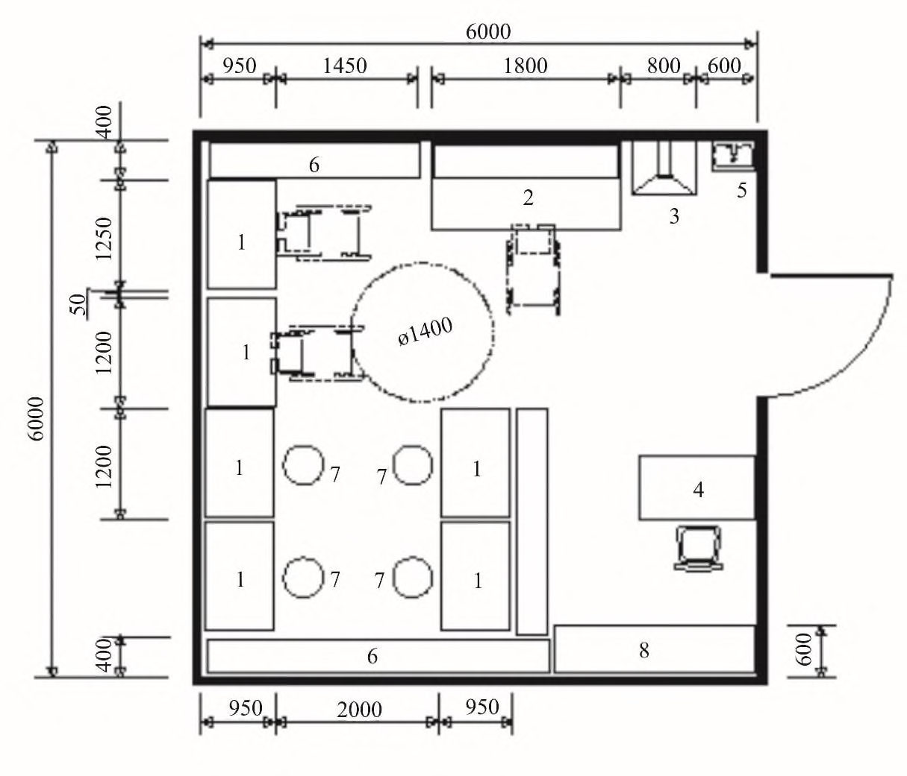

СП 150.13330.2012 «Дома-интернаты для детей-инвалидов. Правила проектирования»
О документе: разработчики, утверждение, регистрация, ключевые слова
СП 150.13330.2012
Москва 2012
Цели и принципы стандартизации в Российской Федерации установлены Федеральным законом от 27 декабря 2002 г. № 184-ФЗ «О техническом регулировании», а правила разработки -постановлением Правительства Российской Федерации от 19 ноября 2008 г. № 858 «О порядке разработки и утверждения сводов правил».
- 1 ИСПОЛНИТЕЛИ ООО «Институт общественных зданий» и ОАО «ЦНИИЭП жилища»
- 2 ВНЕСЕН Техническим комитетом по стандартизации ТК 465 «Строительство»
- 3 ПОДГОТОВЛЕН к утверждению Управлением градостроительной политики
- 4 УТВЕРЖДЕН приказом Федерального агентства по строительству и жилищно-коммунальному хозяйству (Госстрой) от 27 декабря 2012 г. № 136/ГС и введен в действие с 1 июля 2013 г.
- 5 ЗАРЕГИСТРИРОВАН Федеральным агентством по техническому регулированию и метрологии (Росстандарт)
6 ВВЕДЕН ВПЕРВЫЕ
Информация об изменениях к настоящему своду правил публикуется в ежегодно издаваемом информационном указателе «Национальные стандарты», а текст изменений и поправок - в ежемесячно издаваемых информационных указателях «Национальные стандарты». В случае пересмотра (замены) или отмены настоящего свода правил соответствующее уведомление будет опубликовано в ежемесячно издаваемом информационном указателе «Национальные стандарты». Соответствующая информация, уведомление и тексты размещаются также в информационной системе общего пользования - на официальном сайте Росстандарта в сети Интернет
© Госстрой, ФАУ «ФЦС», 2012
Настоящий нормативный документ не может быть полностью или частично воспроизведен, тиражирован и распространен в качестве официального издания на территории Российской Федерации без разрешения Госстроя
Дата введения 2013-07-01
УДК [69+725.011] (083.74)
ОКС 01.040.93
ОКП 74.20
Ключевые слова: дома-интернаты для детей инвалидов, дети с сохраненным интеллектом, дети умственно отсталые, жилые и общественные помещения, лечебнотрудовые мастерские, учебно-производственные мастерские
Введение
Настоящий свод правил разработан с учетом: Федерального закона от 30 декабря 2009 г. № 384-ФЗ «Технический регламент о безопасности зданий и сооружений», Федерального закона Российской Федерации от 29 декабря 2004 г. № 190-ФЗ «Градостроительный кодекс Российской Федерации», Федерального закона Российской Федерации от 22 июня 2006 г. № 123 «Технический регламент о требованиях пожарной безопасности», Федерального закона Российской Федерации от 23 ноября 2009 г. № 261-ФЗ «Об энергосбережении и о повышении энергетической эффективности и о внесении изменений в отдельные законодательные акты Российской Федерации».
Свод правил разработан в развитие положений СП 59.13330 и в соответствии с принципами Конвенции ООН о правах инвалидов, подписанной Российской Федерацией в сентябре 2008 г., содержит рекомендательные нормы и правила по проектированию среды, адаптированной для инвалидов и других маломобильных групп населения.
В своде правил учтены опыт исследований в данной области отечественных и зарубежных специалистов, а также разработки различных авторов и творческих коллективов. В тексте учтены предложения и замечания специалистов Центральных правлений ВОИ, ВОС и ВОГ, НИИ экологии человека и гигиены окружающей среды им. А.Н. Сысина.
При подготовке использованы материалы НИР Ивановгражданпроект, СибЗНИИЭП, ОАО «ЦНИИЭП жилища», ГУП МНИИТЭП; нормативные, обзорные и рекомендательные документы, разработки прошлых лет, данные зарубежных источников и другие материалы.
Редакция выполнена ООО «Институт общественных зданий» (руководитель работы - канд. архит., проф. А.М. Гарнец , ответственный исполнитель - канд. архит. Т.А. Исаева , компьютерная графика - канд. техн. наук А.И. Цыганов , инж. И.Р. Домрачева , исполнители -ст. науч. сотр. Л.В. Сигачева , инж. Н.И. Чернозубова , архит. Н.В. Пронькина ), при участии ОАО ЦНИИЭП жилища (канд. архит., проф. А.А. Магай , канд. архит. Н.В. Дубынин ); ФМБА России, «Федеральное медико-биологическое агентство России» (д-р мед. наук Н.Ф. Дементьева ).
1Область применения
2Нормативные ссылки
В настоящем своде правил приведены ссылки на следующие нормативные документы:
ГОСТ Р 50571.28-2006 Электроустановки зданий. Часть 7-710. Требования к специальным электроустановкам. Электроустановки медицинских помещений
ГОСТ 12.1.004-91 ССБТ Пожарная безопасность. Общие требования
ГОСТ 30494-2011 Здания жилые и общественные. Параметры микроклимата в помещениях
СП 4.13130.2009 «Системы противопожарной защиты. Ограничение распространения пожара на объектах защиты. Требования к объемно-планировочным и конструктивным решениям»
СП 5.13130.2009 «Системы противопожарной защиты. Установки пожарной сигнализации и пожаротушения автоматические. Нормы и правила проектирования»
СП 30.13330.2012 «СНиП 2.04.01-85* Внутренний водопровод и канализация зданий»
СП 42.13330.2011 «СНиП 2.07.01-89* Градостроительство. Планировка и застройка городских и сельских поселений»
СП 52.13330.2011 «СНиП 23-05-95* Естественное и искусственное освещение» СП 54.13330.2011 «СНиП 31-01-2003 Здания жилые многоквартирные»
СП 59.13330.2012 «СНиП 35-01-2001 Доступность зданий и сооружений для маломобильных групп населения»
СП 60.13330.2012 «СНиП 41-01-2003 Отопление, вентиляция и кондиционирование»
СП 118.13330.2012 «СНиП 31-06-2009 Общественные здания и сооружения» СП 145.13330.2012 «Дома-интернаты. Правила проектирования»
Boarding schools (institutions) for disabled children Rules of architectural design
СП 147.13330.2012 «Здания для учреждений социального обслуживания. Правила реконструкции»
СанПиН 2.1.2.2564-09 Гигиенические требования к размещению, устройству, оборудованию, содержанию объектов организаций здравоохранения и социального обслуживания, предназначенных для постоянного проживания престарелых и инвалидов, санитарно-гигиеническому и противоэпидемическому режиму их работы
СанПиН 2.1.3.2630-10 Санитарно-эпидемиологические требования к организациям, осуществляющим медицинскую деятельность
СанПиН 2.2.1/2.1.1.1076-01 Гигиенические требования к инсоляции и солнцезащите помещений жилых и общественных зданий и территорий
СанПиН 2.4.1201-03 Гигиенические требования к устройству, содержанию, оборудованию и режиму работы специализированных учреждений для несовершеннолетних, нуждающихся в социальной реабилитации
СанПиН 2.4.1.2660-10 Санитарно-эпидемиологические требования к устройству, содержанию и организации режима работы в дошкольных организациях
Примечание - При пользовании настоящим сводом правил целесообразно проверить действие ссылочных стандартов и классификаторов в информационной системе общего пользования - на официальном сайте национальных органов Российской Федерации по стандартизации в сети Интернет или по ежегодно издаваемому информационному указателю «Национальные стандарты», который опубликован по состоянию на 1 января текущего года, и по соответствующим ежемесячно издаваемым информационным указателям, опубликованным в текущем году. Если ссылочный документ заменен (изменен), то при пользовании настоящим сводом правил следует руководствоваться замененным (измененным) документом. Если ссылочный документ отменен без замены, то положение, в котором дана ссылка на него, применяется в части, не затрагивающий эту ссылку.
3Термины и определения
- 3.1абилитация
- Медико-социальные мероприятия по отношению к инвалидам с детства, направленные на адаптацию их к жизни.
- 3.2дом-интернат для детей-инвалидов
- Организация стационарного содержания детей с физическими недостатками и с сохранным интеллектом (с 3 до 16 лет), детей с врожденной либо развившейся с раннего возраста инвалидностью, нуждающихся в реабилитации, и умственно отсталых детей с различной инвалидностью (с 4 до 18 лет).
- 3.3комната позиционирования
- Медицинское помещение для детей-инвалидов. Комната позиционирования используется для разнообразных терапевтических позукладок в зависимости от медицинских показаний ребенка-инвалида.
- 3.4сенсорная комната
- Медицинское реабилитационное помещение, предназначенное для психического и физического развития нуждающихся в реабилитации детей с физическими и умственными недостатками. Сенсорная комната оснащается аппаратурой с набором различных управляемых переключателей, сенсорной панелью, стимулирующей двигательные, визуальные и акустические эмоции.
4Общие положения
Структура учреждений и взаимосвязь помещений приведены на рисунке Г.1, состав и площади помещений приведены в таблицах В.1-В.7.
В учреждениях домов-интернатов для детей-инвалидов предусматривается стационарное или пятидневное в неделю проживание детей с сохранным интеллектом (от 3 до 16 лет) и умственно отсталых детей (с 4 до 18 лет).
При числе этажей более двух учреждения для детей-инвалидов должны быть оборудованы лифтами (по расчету), в том числе и коечными. Число лифтов в каждом конкретном случае определяется заданием на проектирование.
В интернатах для детей-инвалидов следует предусматривать кроме лифтов и пандусы. Уклон пандуса на путях передвижения инвалидов на колясках внутри и снаружи здания следует принимать не более 1:6 согласно СП 42.13330, СанПиН 2.4.1.2660.
В учреждении для детей-инвалидов с поражением опорно-двигательного аппарата расчетное число колясочников в отделении следует принимать 20-30 % вместимости отделения. В отделении для умственно отсталых детей, передвигающихся с трудом, число колясочников рекомендуется принимать 2-3 % вместимости отделения. Общую численность колясочников следует уточнять при составлении задания на проектирование.
На основе антропологических и эргонометрических данных детей-инвалидов жилые помещения следует принимать не менее, м² /чел.: спальные комнаты для детей-инвалидов с физическими недостатками - 4,0; для слепых (с остротой зрения 0-0,05) - 4,5; спальные комнаты для детей-инвалидов лежачих - 6,0; комнаты дневного пребывания - 3; классные комнаты в жилых ячейках - 2,5.
5Земельный участок для дома-интерната
При строительстве нового здания дома-интерната для детей-инвалидов в районах с стесненной застройкой площадь земельного участка может быть уменьшена, но не более чем на 20 %.
Площадь участка и состав площадок для различных групп следует принимать в соответствии с таблицами Б.1 и Б.2 и СП 42.13330.
6Объемно-планировочные решения
6.1Приемно-карантинное отделение
Площадь на одно приемно-смотровое место приведена в таблице 1.
Таблица 1 Приемно-карантинное отделение
| Помещения | Площадь, м² |
|---|---|
| Холл (ожидальная) с тамбуром | 10 |
| Палаты на 1-2 места | Не менее 10 (7 м² /на койку) |
| Санузел с умывальником в шлюзе | 3 |
| Комната для санобработки и переодевания | 12 |
| Место для хранения каталок | 6 |
| Кабинет врача, медсестры | 10 |
| Буфетная | 12 |
| Комната сестры-хозяйки | 10 |
В карантинном отделении число мест ориентировочно принимается 3 % общего числа детей-инвалидов в доме-интернате.
``` административно-бытового назначения (таблица В.5); столовой и производственных помещений кухни (таблица В.6); культурно-массового обслуживания (таблица В.7); хозяйственного назначения; ``` помещения проживания персонала (при загородном размещении дома-интерната для детей-инвалидов).
Функционально-планировочную организацию домов-интернатов для детейинвалидов следует проектировать с жилыми отделениями, которые рекомендуется соединять с блоком общественных помещений короткими (6 м) теплыми переходами.
6.2Жилые ячейки
``` для спальных комнат - 4 м² ; для спальных комнат лежачих детей - 6 м² ; для комнат дневного пребывания (комнат отдыха) - 3 м² ; для классных комнат в учебно-жилых ячейках - 2,5 м² , но не менее 12 м² для гардеробных - 1,0 м² ; для санитарно-гигиенических помещений - 1,0 м² ; для помещений сушки одежды - 0,35 м² ; для кладовых - 0,5 м² . ```
;
В жилой ячейке должны быть жилые комнаты на 2-3-4 человека, которые представлены на рисунке Г.2, таблица В.1.
В составе жилой ячейки типа 1б (рисунок Г.2) следует предусматривать классы для обучающихся детей, состав и площади которых представлены в таблице В.3.
Помещения жилой ячейки для детей с нарушением опорно-двигательного аппарата следует проектировать с учетом функциональных зон, обеспечивающих подъезд ребенка-инвалида в кресле-коляске к любой точке помещения. Зону размещения креслаколяски следует принимать шириной 0,9 м и длиной 1,5 м.
Для удобства наблюдения за проживающими в жилых ячейках типа 1в шлюзпередняя не предусматривается. В ванной комнате следует предусмотреть зону для мытья клеенок. Состав и площади помещений жилой ячейки типа 1в представлены в таблице В.1.
- Состав и площади помещений жилой ячейки типа 2в представлены в таблице В.2. 6.2.11 Раздевальные помещения для жилых ячеек типов 2а и 2б следует оборудовать шкафами с подсушкой одежды и обуви. В спальных помещениях жилых ячеек следует предусматривать встроенные шкафы для хранения запаса чистого белья и спальных принадлежностей (0,15 м² /чел.). Схемы решения жилых ячеек типа 2 представлены на рисунке Г.5.
6.3Учебные помещения
Учебные кабинеты и лаборатории для средних и старших классов могут быть использованы для кружковых и индивидуальных занятий в неурочное время.
Площадь застекленной поверхности окон в классах составляет 1/5-1/6 площади пола; 50 % окон следует устраивать с фрамугами или форточками. На столы обучающихся детей свет должен падать слева (СанПиН 2.2.1/2.1.1.1076).
Возраст обучаемых детей рекомендуется следующий: дошкольная группа - 4-8 лет; подготовительная группа к трудовому обучению - 8-12 лет; группа трудового обучения - 12-18 лет; диагностическая группа - 4-18 лет. Возраст необучаемых детей: младшая группа - 4-8 лет; средняя группа - 8-12 лет; старшая группа - 12-18 лет.
Площадь учебных помещений рассчитывается для воспитанников I-IV классов 1,7 м² /место; V-IX (или V-XI) классов - 2,2 м² /место.
Высоту помещений для учебно-производственных мастерских рекомендуется принимать 4,2 м.
6.4Учебно-производственные мастерские
Помещение по ремонту аппаратуры и бытовой техники УПМ представлены на рисунке Г.7.
Для детей-инвалидов 16-18 лет следует проектировать ЛТМ, предусматривающие обучение доступным профессиям. Выбор профиля мастерских уточняется заданием на проектирование в зависимости от контингента детей, а также конкретных условий и возможностей места строительства.
6.5Медицинские помещения
Общие на здание медицинские помещения домов-интернатов для детей-инвалидов состоят из кабинетов врачей, врачей-консультантов, кабинета медсестры, физиотерапевтического кабинета, общеклинической лаборатории, аптеки, кабинета ЛФК, сенсорной и позиционирующей комнат, изолятора. Состав и площади помещений представлены в таблице В.4.
При планировке лечебных помещений следует учитывать, что умственно отсталые дети на процедуры приходят группами до 15 чел. в сопровождении персонала, процедуры происходят в открытых просматриваемых помещениях и залах. Применение закрытых кабин запрещается.
6.6Служебно-бытовые помещения
6.7Помещения питания
6.8Зальные помещения
6.9Помещения культурно-массового и досугового назначения
7Инженерное оборудование
7.1Водоснабжение и канализация
Шланг должен обеспечивать возможность подачи воды в любую точку жилой ячейки с учетом длины струи 3 м, быть длиной не менее 15 м, диаметром 19 мм и оборудован распылителем.
7.2Отопление, вентиляция и кондиционирование воздуха
Необходимость устройства кондиционирования воздуха устанавливается соответствующими документами. В помещениях, где длительное время работает кондиционер, нахождение детей недопустимо.
Вытяжную вентиляцию жилых комнат и жилых ячеек следует предусматривать через вытяжные каналы кухонь, уборных, ванных, сушильных шкафов.
Если метеорологические условия и чистота воздуха не могут быть обеспечены вентиляцией с естественным побуждением, следует предусматривать вентиляцию с механическим побуждением притока и удаления воздуха или комбинированную вентиляцию с естественным притоком и удаление воздуха через вентиляционные каналы с частичным использованием механического побуждения согласно СП 60.13330.
На воздуховодах систем общеобменной вентиляции необходимо предусматривать противопожарные клапаны, воздушные затворы, место и расположение которых принимаются по ГОСТ 30494.
7.3. Электротехнические устройства
Внутридомовые, внутри жилых ячеек и жилых отделений электрические сети должны оборудоваться устройствами защитного отключения согласно [4], ГОСТ Р 50571.28.
- В домах-интернатах установку штепсельных розеток рекомендуется предусматривать в защищенном от детей исполнении в соответствии с размещением оборудования, предусмотренным технологической частью проекта.
Двусторонняя селекторная связь предусматривается: между кабинетом заведующего со следующими помещениями: групповыми, медицинской комнатой, пищеблоком, комнатой завхоза, комнатой охранника, вахтера и комнатой кастелянши; между Постом дежурного персонала и помещениями самостоятельного пребывания инвалидов с нарушением опорно-двигательного аппарата и инвалидов, не способных к самостоятельному передвижению.
АПриложение А (справочное). Возрастные группы детей-инвалидов в доме-интернате
Таблица А.1 Группы детей с сохранным интеллектом и с физическими недостатками
| Возраст детей, | Мест в спальной комнате / спальных комнат в жилой ячейке для детей, имеющих отклонение в развитии | Мест в спальной комнате / спальных комнат в жилой ячейке для детей, имеющих отклонение в развитии | Мест в спальной комнате / спальных комнат в жилой ячейке для детей, имеющих отклонение в развитии | Мест в спальной комнате / спальных комнат в жилой ячейке для детей, имеющих отклонение в развитии | Мест в спальной комнате / спальных комнат в жилой ячейке для детей, имеющих отклонение в развитии | |
|---|---|---|---|---|---|---|
| Наименование группы | лет | нарушение зрения | нарушение слуха | нарушение речи | нарушение опорно- двигательного аппарата | лежачие |
| Дошкольная группа | 3-7 | 4-6 4 | 6 3 | 4-6 4 | 4 4 | 6-8 3 |
| Подготовительная группа к общеобразовательным школьным занятиям | 6-7 | 3-4 4 | 3-4 4 | 3-4 4 | 3-4-6 4 | 6-8 3 |
| Группа профессионального обучения | 8-16 | 2-4 4 | 2-4 4 | 2-4 4 | 2-4-6 4 | 6-8 3 |
Таблица А.2 Группы умственно отсталых детей
| Возраст детей, | Мест в спальной комнате / спальных комнат в жилой ячейке для детей, имеющих отклонение в развитии | Мест в спальной комнате / спальных комнат в жилой ячейке для детей, имеющих отклонение в развитии | Мест в спальной комнате / спальных комнат в жилой ячейке для детей, имеющих отклонение в развитии | Мест в спальной комнате / спальных комнат в жилой ячейке для детей, имеющих отклонение в развитии | |
|---|---|---|---|---|---|
| Наименование группы | лет | самостоятельно передвигающиеся | передвигающиеся с трудом с помощью приспособления | не способные к самостоятельному передвижению | лежачие |
| Обучаемые дети | Обучаемые дети | Обучаемые дети | Обучаемые дети | Обучаемые дети | Обучаемые дети |
| Дошкольная группа | 4-8 | 4-6 4 | 4-6 3 | 4-6 4 | 6-8 3 |
| Подготовительная группа к трудовому обучению | 8-12 | 4 2 | 4 2 | 4 2 | 6-8 3 |
| Группа трудового обучения | 12-18 | 4 3 | 4 3 | 4 3 | 6-8 3 |
| Диагностическая группа | 4-18 | 4 3 | 4 3 | 4 3 | 6-8 3 |
| Необучаемые дети | Необучаемые дети | Необучаемые дети | Необучаемые дети | Необучаемые дети | Необучаемые дети |
| Младшая группа | 4-8 | 6-8 2 | 6-8 2 | 6-8 2 | 6-8 3 |
| Средняя группа | 8-12 | 6-8 2 | 6-8 2 | 6-8 2 | 6-8 3 |
| Старшая группа | 12-18 | 6-8 2 | 6-8 2 | 6-8 2 | 6-8 2 |
Примечание - Диагностическая группа создается с целью выяснения степени умственной отсталости, возможности трудового обучения и уточнения методов коррекционно-воспитательной работы с воспитанниками.
БПриложение Б. (рекомендуемое)
Площади земельных участков
Таблица Б.1 Состав функциональных зон
| Площадь участка, м² , при вместимости дома-интерната для детей-инвалидов, мест | Площадь участка, м² , при вместимости дома-интерната для детей-инвалидов, мест | Площадь участка, м² , при вместимости дома-интерната для детей-инвалидов, мест | Площадь участка, м² , при вместимости дома-интерната для детей-инвалидов, мест | Площадь участка, м² , при вместимости дома-интерната для детей-инвалидов, мест | Площадь участка, м² , при вместимости дома-интерната для детей-инвалидов, мест | |
|---|---|---|---|---|---|---|
| Площади функциональных зон | 100 | 100 | 120 | 120 | 200 | 200 |
| с сохранным интеллектом | умственно отсталых | с сохранным интеллектом | умственно отсталых | с сохранным интеллектом | умственно отсталых | |
| Детские площадки: | ||||||
| групповые | 2,08 | 2,08 | 1,9 | 1,8 | 1,5 | 1,2 |
| общие | 12,5 | 11 | 10 | 8 | 9 | 7 |
| физкультурные огород-ягодник | 0,12 | 0,1 | 0,12 | 0,1 | 0,1 | 0,1 |
| уголок для животных и птиц | 0,18 | - | 0,16 | - | 0,15 | - |
| Хозплощадки | 1 | 1,2 | 1,0 | 1,2 | 1 | 1,2 |
| Дороги, проезды | По расчету в соответствии с планировкой | По расчету в соответствии с планировкой | По расчету в соответствии с планировкой | По расчету в соответствии с планировкой | По расчету в соответствии с планировкой | По расчету в соответствии с планировкой |
| Зеленые посадки | Не менее 40 %площади участка | Не менее 40 %площади участка | Не менее 40 %площади участка | Не менее 40 %площади участка | Не менее 40 %площади участка | Не менее 40 %площади участка |
| Теневой навес | 2,6 | 2,08 | 2,2 | 2 | 2 | 1,8 |
Таблица Б.2 Площадь земельного участка
| Тип здания | Вместимость, мест | Площадь участка, м² /место |
|---|---|---|
| Дом-интернат для детей-инвалидов | 100 | 80 |
| Дом-интернат для детей-инвалидов | 120 | 60 |
| Дом-интернат для детей-инвалидов | 200 | 50 |
ВПриложение В. (рекомендуемое)
Состав и площади помещений домов-интернатов для детей-инвалидов
Таблица В.1 Жилое отделение для детей с сохранным интеллектом и с физическими недостатками, жилые ячейки типа 1а, 1б, 1в
| Расчетная площадь на 1 место, м² (или площадь помещения, м² ) | Расчетная площадь на 1 место, м² (или площадь помещения, м² ) | Расчетная площадь на 1 место, м² (или площадь помещения, м² ) | Расчетная площадь на 1 место, м² (или площадь помещения, м² ) | Расчетная площадь на 1 место, м² (или площадь помещения, м² ) | Расчетная площадь на 1 место, м² (или площадь помещения, м² ) | Расчетная площадь на 1 место, м² (или площадь помещения, м² ) | Расчетная площадь на 1 место, м² (или площадь помещения, м² ) | |
|---|---|---|---|---|---|---|---|---|
| Жилые ячейки для младших групп | Жилые ячейки для младших групп | Жилые ячейки для младших групп | Жилые ячейки для младших групп | Жилые ячейки для подростков и старшеклассников | Жилые ячейки для подростков и старшеклассников | Жилые ячейки для подростков и старшеклассников | Жилые ячейки для подростков и старшеклассников | |
| Тип 1а | Тип 1а | Тип 1а | Тип 1в | Тип 1б | Тип 1б | Тип 1б | Тип 1в | |
| Помещение | Нарушение слуха и речи | Нарушение зрения | Нарушение опорно- двигательного аппарата | Лежачие обездвиженные | Нарушение слуха и речи | Нарушение зрения | Нарушение опорно- двигательного аппарата | Лежачие обездвиженные |
| А. Помещения жилых ячеек | А. Помещения жилых ячеек | А. Помещения жилых ячеек | А. Помещения жилых ячеек | А. Помещения жилых ячеек | А. Помещения жилых ячеек | А. Помещения жилых ячеек | А. Помещения жилых ячеек | А. Помещения жилых ячеек |
| Раздевальная | 1,0 | 1,0 | 1,0 | - | 1,0 | 0,1 | 1,0 | - |
| Групповая | 4 | 4 | 4 | - | 4 | 4 | 4 | - |
| Спальная | 4 | 4 | 4 | 6-8 | 4 | 4 | 4 | 6-8 |
| Санузел, уборная, умывальная, душ | 0,8 | 0,8 | 0,8 | - | 0,8 | 0,8 | 0,8 | - |
| Ванная со шкафом для суден | - | - | - | (20) на 1-2 жилые ячейки | - | - | - | (20) на 1-2 жилые ячейки |
| Буфетная | (Не менее 4) на жилую ячейку | (Не менее 4) на жилую ячейку | (Не менее 4) на жилую ячейку | (6-9) на 1-2 жилые ячейки | (Не менее 4) на жилую ячейку | (Не менее 4) на жилую ячейку | (Не менее 4) на жилую ячейку | (6-9) на 1-2 жилые ячейки |
| Кладовая хозяйственная | (2) на жилую ячейку | (2) на жилую ячейку | (2) на жилую ячейку | (4) | (2) на жилую ячейку | (2) на жилую ячейку | (2) на жилую ячейку | (4) |
| Комната хранения уборочного инвентаря | (4) на жилое отделение | (4) на жилое отделение | (4) на жилое отделение | (4) на жилое отделение | (4) на жилое отделение | (4) на жилое отделение | (4) на жилое отделение | (4) на жилое отделение |
| Учебная комната для приготовления уроков | - | - | - | - | (12-18) на 1-2 жилые ячейки | (12-18) на 1-2 жилые ячейки | (12-18) на 1-2 жилые ячейки | - |
| Комната воспитателя | (12) на жилое отделение | (12) на жилое отделение | (12) на жилое отделение | (12) на жилое отделение | (12) на жилое отделение | (12) на жилое отделение | (12) на жилое отделение | (12) на жилое отделение |
| Летняя веранда | 1 | 1 | 1 | 1 | 1 | 1 | 1 | 1 |
| Класс | - | - | - | - | 3 | 3 | 3 | - |
| Б. Общие помещения на отделение (4-5 жилых ячеек) | Б. Общие помещения на отделение (4-5 жилых ячеек) | Б. Общие помещения на отделение (4-5 жилых ячеек) | Б. Общие помещения на отделение (4-5 жилых ячеек) | Б. Общие помещения на отделение (4-5 жилых ячеек) | Б. Общие помещения на отделение (4-5 жилых ячеек) | Б. Общие помещения на отделение (4-5 жилых ячеек) | Б. Общие помещения на отделение (4-5 жилых ячеек) | Б. Общие помещения на отделение (4-5 жилых ячеек) |
| Кабинет заведующего | (12) на отделение | (12) на отделение | (12) на отделение | (12) на отделение | (12) на отделение | (12) на отделение | (12) на отделение | (12) на отделение |
| Пост дежурного персонала | (6) на отделение | (6) на отделение | (6) на отделение | (6) на отделение | (6) на отделение | (6) на отделение | (6) на отделение | (6) на отделение |
| Комната дежурной медсестры | (12-15) на отделение | (12-15) на отделение | (12-15) на отделение | (12-15) на отделение | (12-15) на отделение | (12-15) на отделение | (12-15) на отделение | (12-15) на отделение |
| Кабинет логопеда | (12) на отделение | (12) на отделение | (12) на отделение | (12) на отделение | (12) на отделение | (12) на отделение | (12) на отделение | (12) на отделение |
| Кабинет ортопеда | (12) на отделение | (12) на отделение | (12) на отделение | (12) на отделение | (12) на отделение | (12) на отделение | (12) на отделение | (12) на отделение |
| Расчетная площадь на 1 место, м² (или площадь помещения, м² ) | Расчетная площадь на 1 место, м² (или площадь помещения, м² ) | Расчетная площадь на 1 место, м² (или площадь помещения, м² ) | Расчетная площадь на 1 место, м² (или площадь помещения, м² ) | Расчетная площадь на 1 место, м² (или площадь помещения, м² ) | Расчетная площадь на 1 место, м² (или площадь помещения, м² ) | Расчетная площадь на 1 место, м² (или площадь помещения, м² ) | Расчетная площадь на 1 место, м² (или площадь помещения, м² ) | |
|---|---|---|---|---|---|---|---|---|
| Жилые ячейки для младших групп | Жилые ячейки для младших групп | Жилые ячейки для младших групп | Жилые ячейки для подростков старшеклассников | Жилые ячейки для подростков старшеклассников | Жилые ячейки для подростков старшеклассников | и | и | |
| Тип 1а | Тип 1а | Тип 1в | Тип 1б | Тип 1б | Тип 1б | Тип 1в | Тип 1в | |
| Помещение | Нарушение слуха и речи | Нарушение зрения | Лежачие обездвиженные | Нарушение слуха и речи | Нарушение зрения | Нарушение опорно- двигательного аппарата | Лежачие обездвиженные | Лежачие обездвиженные |
| Место хранения кресел-колясок | (3) на жилую ячейку | (3) на жилую ячейку | (3) на жилую ячейку | (3) на жилую ячейку | (3) на жилую ячейку | (3) на жилую ячейку | (3) на жилую ячейку | (3) на жилую ячейку |
| Комната для хранения чистого белья | (12) на отделение | (12) на отделение | (12) на отделение | (12) на отделение | (12) на отделение | (12) на отделение | (12) на отделение | (12) на отделение |
| Помещение для гимнастических и музыкальных занятий и лечебной физкультуры | - | - | ||||||
| Кабинет личной гигиены девочек | 60-70 м² с кладовой 12 м² | 60-70 м² с кладовой 12 м² | 60-70 м² с кладовой 12 м² | 60-70 м² с кладовой 12 м² | 60-70 м² с кладовой 12 м² | 60-70 м² с кладовой 12 м² | ||
| для | (24) на отделение | (24) на отделение | (24) на отделение | (24) на отделение | (24) на отделение | (24) на отделение | (24) на отделение | (24) на отделение |
| Комната персонала, при которой туалетная с душевой | (12) на отделение | (12) на отделение | (12) на отделение | (12) на отделение | (12) на отделение | (12) на отделение | (12) на отделение | (12) на отделение |
| с родителями | ||||||||
| Комната для встреч | ||||||||
| (4) на жилое отделение - (4) на жилое отделение - | (4) на жилое отделение - (4) на жилое отделение - | (4) на жилое отделение - (4) на жилое отделение - | (4) на жилое отделение - (4) на жилое отделение - | (4) на жилое отделение - (4) на жилое отделение - | (4) на жилое отделение - (4) на жилое отделение - | (4) на жилое отделение - (4) на жилое отделение - | (4) на жилое отделение - (4) на жилое отделение - |
Таблица В.2 Жилое отделение для детей умственно отсталых, жилые ячейки типа 2а, 2б, 2в
| Расчетная площадь на 1 место, м² (или площадь помещения, м² ) | Расчетная площадь на 1 место, м² (или площадь помещения, м² ) | Расчетная площадь на 1 место, м² (или площадь помещения, м² ) | Расчетная площадь на 1 место, м² (или площадь помещения, м² ) | Расчетная площадь на 1 место, м² (или площадь помещения, м² ) | Расчетная площадь на 1 место, м² (или площадь помещения, м² ) | |
|---|---|---|---|---|---|---|
| Жилая ячейка для младшей группы | Жилая ячейка для младшей группы | Жилая ячейка для младшей группы | Жилая ячейка для средней и старшей групп | Жилая ячейка для средней и старшей групп | Жилая ячейка для средней и старшей групп | |
| Тип 2а | Тип 2а | Тип 2в | Тип 2б | Тип 2б | Тип 2в | |
| Помещение | Свободно передвигающиеся | Передвигающиеся с трудом | Лежачие | Свободно передвигающиеся | Передвигающиеся с трудом | Лежачие |
| Раздевальная | 1 | 1 | - | - | - | - |
| Групповая, в том числе используемая качестве обеденного помещения | - | 1,2 | ||||
| Спальная комната | 4 | 4 | 6 | 6 | 6 | 6 |
СП 150.13330.2012 Окончание таблицы В.2
| Расчетная площадь на 1 место, м² (или площадь помещения, м² ) | Расчетная площадь на 1 место, м² (или площадь помещения, м² ) | Расчетная площадь на 1 место, м² (или площадь помещения, м² ) | Расчетная площадь на 1 место, м² (или площадь помещения, м² ) | Расчетная площадь на 1 место, м² (или площадь помещения, м² ) | Расчетная площадь на 1 место, м² (или площадь помещения, м² ) | |
|---|---|---|---|---|---|---|
| Жилая ячейка для младшей группы | Жилая ячейка для младшей группы | Жилая ячейка для младшей группы | Жилая ячейка для средней и старшей групп | Жилая ячейка для средней и старшей групп | Жилая ячейка для средней и старшей групп | |
| Тип 2а | Тип 2а | Тип 2в | Тип 2б | Тип 2б | Тип 2в | |
| Помещение | Свободно передвигающиеся | Передвигающиеся с трудом | Лежачие | Свободно передвигающиеся | Передвигающиеся с трудом | Лежачие |
| Санузел: | ||||||
| уборная, умывальная, душ и ванная | (8) на жилую ячейку | (9) на жилую ячейку | (5) на жилую ячейку | (9) на жилую ячейку | (9) на жилую ячейку | (5) на жилую ячейку |
| со шкафом для суден | - | - | 1,6 | - | - | 1,6 |
| Буфетная с мойкой | (3) на жилую ячейку | (3) на жилую ячейку | - | - | - | - |
| Кладовая | - | - | (3) на жилую ячейку | (3) на жилую ячейку (3) на жилую ячейку | (3) на жилую ячейку (3) на жилую ячейку | (3)на жилую ячейку |
| Комната хранения уборочного инвентаря | (4) на жилую ячейку | (4) на жилую ячейку | (4) на жилую ячейку | (4) на жилую ячейку | (4) на жилую ячейку | (4) на жилую ячейку |
| Учебная комната для приготовления уроков | - | - | - | (12) на жилые ячейки | (12) на жилые ячейки | - |
| Комната психолога и воспитателя | - | - | - | (12-14) на жилые ячейки | (12-14) на жилые ячейки | (12-14) на жилые ячейки |
| Летняя веранда | 1 | 1 | 1 | 1 | 1 | 1 |
| Класс-комната трудового обучения | - | - | - | 3 | 3 | - |
| Б. Общие помещения на отделение (4-5 жилых ячеек) | Б. Общие помещения на отделение (4-5 жилых ячеек) | Б. Общие помещения на отделение (4-5 жилых ячеек) | Б. Общие помещения на отделение (4-5 жилых ячеек) | Б. Общие помещения на отделение (4-5 жилых ячеек) | Б. Общие помещения на отделение (4-5 жилых ячеек) | Б. Общие помещения на отделение (4-5 жилых ячеек) |
| Кабинет заведующего | (12) на отделение | (12) на отделение | (12) на отделение | (12) на отделение | (12) на отделение | (12) на отделение |
| Комната старшей медицинской сестры | (15) на отделение | (15) на отделение | (15) на отделение | (15) на отделение | (15) на отделение | (15) на отделение |
| Помещение для гимнастических и музыкальных занятий и лечебной физкультуры | (24) на отделение | (24) на отделение | (24) на отделение | (24) на отделение | (24) на отделение | (24) на отделение |
| Комната встречи родителей с детьми | (20) на отделение | (20) на отделение | (20) на отделение | (20) на отделение | (20) на отделение | (20) на отделение |
| Комната персонала с туалетом и душевой | (8) на отделение | (8) на отделение | (8) на отделение | (8) на отделение | (8) на отделение | (8) на отделение |
| Комната хранения кресел-колясок | (6) на жилую ячейку | (6) на жилую ячейку | (6) на жилую ячейку | (6) на жилую ячейку | (6) на жилую ячейку | (6) на жилую ячейку |
| Комната хранения чистого белья | (12) на отделение | (12) на отделение | (12) на отделение | (12) на отделение | (12) на отделение | (12) на отделение |
| Комната личной гигиены для девочек | - | - | - | Один кабинет на жилую | Один кабинет на жилую | - |
| Пост дежурного персонала | 4 м² | 4 м² | 4 м² | 4 м² | 4 м² | 4 м² |
| Примечание - В группах для необучаемых детей раздевальная и групповая 2 | не | не | не | не | не | не |
Таблица В.3 Помещения учебной и профессиональной подготовки и трудового обучения
| Площадь помещений, м² , учебной и профессиональной подготовки | Площадь помещений, м² , учебной и профессиональной подготовки | Площадь помещений, м² , учебной и профессиональной подготовки | Площадь помещений, м² , учебной и профессиональной подготовки | ||
|---|---|---|---|---|---|
| Помещение | для детей с сохранным интеллектом | для детей с сохранным интеллектом | для детей умственно отсталых | для детей умственно отсталых | Примечания |
| на | общая площадь | на | |||
| 1 место | 1 место | общая площадь | |||
| Учебно-игровые комнаты для школьников и младших классов | 4 | - | 3,6 | - | Для разновозрастных групп |
| Классы на 8-10 детей I-V классы V-IX классы X-XI классы | 3 3 3,6 | 24-30 24-30 36 | 3 3 3 | Устанавливается по заданию на проектирование | В домах- интернатах для детей с недостатками умственного развития допускается принимать численность обучающихся из расчета на 50% детей от вместимости учреждения |
| Класс на 12 человек | - | - | 3 | 36 | |
| Кабинет домоводства | - | 50 | - | 50+16 | |
| Производственные мастерские (столярная) | 4,5 | - | 4,5 | - | |
| Склад сырья | - | - | - | 16 | На мастерскую |
| Склад готовой продукции | - | - | - | 16 | То же |
| Инструментальная комната | - | - | - | 25 | |
| Кабинет методический и учебных пособий | - | - | - | 40 | |
| Санузел | - | - | - | 3Ч2 | |
| Кабинет зав. учебной частью | 12 | На отделение | |||
| Рекреационные помещения | 1,2 | - | 1,4 | - | |
| Кабинет физики с лаборантской | - | 54 | - | 54+18 | |
| Гимнастический зал | - | 18×9 | - | - | На отделение |
| Кабинет химии с лаборантской | - | 54+18 | - | - | Для средних и старших школьников (для обучаемых |
| Класс машинописи с подсобным помещением | - | 54+18 | - | - | Для средних и старших школьников (для обучаемых |
| Класс рисования - изостудия с кладовой | - | 54+18 | - | 54+18 | детей) |
| Компьютерный класс с подсобным помещением | - | 54+18 | - | - | То же |
СП 150.13330.2012 Продолжение таблицы В.3
| Площадь помещений, м² , учебной и профессиональной подготовки | Площадь помещений, м² , учебной и профессиональной подготовки | Площадь помещений, м² , учебной и профессиональной подготовки | Площадь помещений, м² , учебной и профессиональной подготовки | ||
|---|---|---|---|---|---|
| Помещение | для детей с сохранным интеллектом | для детей с сохранным интеллектом | для детей умственно отсталых | для детей умственно отсталых | Примечания |
| на 1 место | общая площадь | на 1 место | общая площадь | ||
| Класс биологии - живой уголок с лаборантской | - | 54+18 | - | - | Для средних и старших школьников (для обучаемых детей) |
| Комната музыкальных занятий с кладовой инструментов | - | 54+18 | - | 54+18 | Для средних и старших школьников (для обучаемых детей) |
| Классы: | - | - | - | 21+10 | То же |
| чтения | - | - | - | 36+10 | |
| математики | - | - | - | 36 | |
| счета | - | - | - | 36 | |
| Кабинет социально-бытовой адаптации, помещение для приема гостей | - | 72+10 | - | 36+10 | |
| Библиотека с книгохранилищем и читальным залом, кабинет русского и иностранного языков | - | 120 | - | 60,0 | На отделение |
| Методический кабинет | - | 36 | - | - | |
| Кабинет заведующего учебной частью | - | 18 | - | - | |
| Комната учителей, мастеров, организатора работ | - | 54 | - | - | |
| Кладовая мебели, инвентаря | - | 24 | - | - | |
| Санитарные узлы для мальчиков и девочек | - | По расчету | - | По расчету | Распределяются поэтажно |
| Учебно-производственные мастерские с инвентарными и подсобными помещениями: | Для средних и старших школьников умственно отсталых | ||||
| швейная | - | 36+12+10 | - | 36 | |
| картонажно-переплетная | - | 72+18+10 | - | 72 | |
| столярная | - | 54+18+10 | - | 54 | |
| ткацкая | - | 54+18+10 | - | - | |
| механической сборки | - | 36+18 | - | - | |
| электромонтажная | - | 36+18 | - | - |
| Площадь помещений, м² , учебной и профессиональной подготовки | Площадь помещений, м² , учебной и профессиональной подготовки | Площадь помещений, м² , учебной и профессиональной подготовки | Площадь помещений, м² , учебной и профессиональной подготовки | ||
|---|---|---|---|---|---|
| Помещение | для детей с сохранным интеллектом | для детей с сохранным интеллектом | для детей умственно отсталых | для детей умственно отсталых | Примечания |
| на 1 место | общая площадь | на 1 место | общая площадь | ||
| токарно-фрезерная | - | 72+18 | - | - | |
| гончарная | - | 36+18+10 | - | 36 | |
| обувная | - | 36 | - | 36 | |
| ручных ремесел (вязания, лозоплетения и пр.) | - | 36+12+10 | - | 36+12+10 | |
| ремонта аппаратуры и бытовой техники | - | 36+18+10 | - | 36+18+10 | |
| Класс подготовки младшего медицинского персонала с кладовой учебных пособий | - | 36+10 | - | 36+10 | Для средних и старших школьников с недостатками умственного развития |
| Класс для обучения умственно отсталых детей | - | - | 2,0 | - | |
| Лечебно-трудовые мастерские с кладовой: | - | 60+18 | - | 60+18 | По заданию на проектирование |
| мастерская производительного общественно-полезного труда | 1,7 | - | 1,7 | - | |
| картонажная мастерская | 1,0 | - | 1,0 | - | |
| швейная мастерская | 1,2 | - | 1,2 | - | |
| кулинария | - | 18,0 | - | 18,0 | |
| помещение музыкальных занятий | - | 36,0 | - | 36,0 | |
| кабинет домоводства | - | 36,0 | - | 36,0 |
Таблица В.4 Помещения медицинского обслуживания
| Помещение | Площадь помещений, м² , общих на отделения для детей с сохранным интеллектом и умственно отсталых детей при вместимости домов-интернатов, мест | Площадь помещений, м² , общих на отделения для детей с сохранным интеллектом и умственно отсталых детей при вместимости домов-интернатов, мест | Площадь помещений, м² , общих на отделения для детей с сохранным интеллектом и умственно отсталых детей при вместимости домов-интернатов, мест | Примечания |
|---|---|---|---|---|
| 100 | 120 | 200 | ||
| Кабинет заместителя директора по медицинской работе | 16 | 18 | 18 | |
| Кабинет педиатра | 15 | 15 | 15 | |
| Кабинет консультативного приема с темной комнатой | 20+8 | 20+8 | 20+8 |
СП 150.13330.2012 Продолжение таблицы В.4
| Помещение | Площадь помещений, м² , общих на отделения для детей с сохранным интеллектом и умственно отсталых детей при вместимости домов-интернатов, мест | Площадь помещений, м² , общих на отделения для детей с сохранным интеллектом и умственно отсталых детей при вместимости домов-интернатов, мест | Площадь помещений, м² , общих на отделения для детей с сохранным интеллектом и умственно отсталых детей при вместимости домов-интернатов, мест | Примечания |
|---|---|---|---|---|
| 100 | 120 | 200 | Примечания | |
| Кабинет старшей медицинской сестры | 12 | 12 | 12×2 | |
| Комната клинической лаборатории (анализы крови, мочи) | 18,0 | |||
| Аптечная комната | - | 8+4 | 10+4 | |
| Стерилизационно-автоклавная с помещением хранения и выдачи стерильных материалов | 12+6 | 12+6 | 14+6 | |
| Стоматологический кабинет | 16,0 | |||
| Кабинет психоневролога | 15 | 15 | 15×2 | |
| Кабинет логопеда | 18 | 18 | 18 | |
| Кабинет ЛФК | 24 | 24 | 36 | |
| Кабинет индивидуального массажа и занятий ЛФК | 18 | 18 | 18+2 | |
| Ингаляторий | 24 | 24 | 30 | |
| Кабинет гидротерапии | 24 | 24 | 28 | |
| Раздевальная | 14 | 14 | 14 | |
| Водолечение: | По 7-8 м² | |||
| ванный зал кабинет подводного массажа | 28 18 (для | детей с интеллектом) | 28×2 18 сохранным | на 1 ванну в открытом помещении, одна ванна должна быть приспособлена для обслуживания детей- опорников |
| раздевальная Кабинет светолечения | 12 | 12 | 18 | |
| Подсобная комната | 10 | |||
| Аминозиновый кабинет с подсобным помещением | 18+6 | |||
| Кабинет озокерито-парафинолечения, горячих укутываний | 16+6 (для детей с сохранным интеллектом) | 16+6 (для детей с сохранным интеллектом) | 16+6 (для детей с сохранным интеллектом) | |
| Кабинет механотерапии | 28 | Для детей с сохранным интеллектом | ||
| Кабинет | ||||
| оксигенотерапии | 14 | 14 | 20 |
| Помещение | Площадь помещений, м² , общих на отделения для детей с сохранным интеллектом и умственно отсталых детей при вместимости домов-интернатов, мест | Площадь помещений, м² , общих на отделения для детей с сохранным интеллектом и умственно отсталых детей при вместимости домов-интернатов, мест | Площадь помещений, м² , общих на отделения для детей с сохранным интеллектом и умственно отсталых детей при вместимости домов-интернатов, мест |
|---|---|---|---|
| 100 | 120 | 200 | |
| Кабинет психологической разгрузки | 18 | 18 | 24 |
| Комната персонала | 14 | 14 | 12+2 |
| Санитарные узлы для мальчиков и девочек с умывальниками в шлюзе | 16 | 16×2 | 18×2 |
| Комнаты хранения предметов уборки | 4 | 4×2 | 4×2 |
| Санузлы персонала с умывальниками в шлюзе | 3 | 3×2 | 3×2 |
| Сенсорная комната | 18 | 24 | 36 |
| Комната позиционирования | 18 | 24 | 36 |
| Диагностический кабинет | 24 | 24 | 36 |
| Отделение психиатрической помощи: кабинет психиатра | 12 | 12 | 12×2 |
| комната медсестры Медицинские помещения изолятора* медицинский кабинет процедурный кабинет изолятор | 12 12 8 | 14 12 8 | 12×2 12 8 Не менее 2 |
| туалет с местом для приготовления дезинфекционных растворов | Не менее 4 м² (1 палата) 6 | Не менее 4 м² (1 палата) 6 | 4 м (1 палата) 6 |
| *По СанПиН 2.4.1.2660, таблица 1, приложение | 1. |
Таблица В.5 Состав площадей и общих помещений административнобытового назначения
| Помещения | Площадь помещений, м² , при вместимости домов- интернатов, мест | Площадь помещений, м² , при вместимости домов- интернатов, мест | Площадь помещений, м² , при вместимости домов- интернатов, мест | Примечания |
|---|---|---|---|---|
| 100 | 120 | 200 | ||
| Вестибюль с гардеробом для посетителей | 74 | 80 | 90 | |
| Санитарные узлы мужские и женские с умывальником в шлюзе | 10 (5×2) | 10 (5×2) | 15 (5×3) | |
| Помещение дежурного | 10 | 10 | 10 | |
| Кабинет директора | 18 | 18 | 24 | |
| Канцелярия-приемная | 12 | 14 | 18 | |
| Кабинет заместителя директора по хозяйственной части | 12 | 14 | 16 | |
| Помещение дежурного персонала технического обслуживания | 10 | 14 | 14 | |
| Бухгалтерия с кассой | 12+4 | 12+4 | 18+4 |
Окончание таблицы В.5
| Помещения | Площадь помещений, м² , при вместимости домов- интернатов, мест | Площадь помещений, м² , при вместимости домов- интернатов, мест | Площадь помещений, м² , при вместимости домов- интернатов, мест | Примечания |
|---|---|---|---|---|
| 100 | 120 | 200 | ||
| Комната отдыха персонала | 24 | 24 | 36 | |
| Комната сестры-хозяйки с кладовой | 10+6 | 12+6 | 12+6 | |
| Кладовые грязного белья и чистого белья с починочной | 10+12 | 10+12 | 16+20 | |
| Помещение архива | 8 | 10 | 12 | Может располагаться в подвале |
| АТС | 18 | 18 | 24 | То же |
| Гардероб персонала с душевой и санитарным узлом | 24 | 24 | 36 | » |
| Кладовые, инвентарные | 30 | 30 | 40 | » |
| Помещение ремонта электроаппаратуры с подсобным помещением | 12+4 | 12+4 | 14+6 | » |
| Комнаты хранения предметов уборки | 4+4 | 4+4 | 4+4 | |
| Постирочная | 8+18+6 | 8+18+6 | 8+22+8 | В случае если в составе помещений хозяйственного обслуживания прачечная не предусмотрена |
| Прачечная-постирочная: | ||||
| центральная бельевая с текущим ремонтом белья | 18 | 18 | 20 | |
| комната хранения одежды для списания | 6 | 6 | 6 | |
| помещение для сортировки грязного белья, в том числе: | 48 | 50 | 55 | |
| цех приема белья | 6 | 6 | 6 | |
| стиральный цех | 14 | 14 | 17 | |
| сушильно-гладильный цех | 12 | 12 | 15 | |
| цех разборки и упаковки белья | 6 | 6 | 8 | |
| гардеробная персонала | 4 | 4 | 4 | |
| уборная для персонала с умывальником | 3 | 3 | 3 | |
| в шлюзе дезинфекционное отделение, в том числе: | 42 | 44 | 44 | |
| прием и сортировка вещей | 6 | 6 | 8 | |
| грязное отделение | 10 | 10 | 10 | |
| разгрузочное отделение | 15 | 15 | 15 | |
| шлюз между ними | - | 3 | 4 | |
| выдача вещей | 6 | 8 | 8 | |
| помещение для дезинфекционных средств | ||||
| и приготовления растворов | 4+4 |
Таблица В.6 Помещения столовой и производственных помещений кухни
| Помещение | Площадь помещений, м² , при вместимости домов- интернатов, мест | Площадь помещений, м² , при вместимости домов- интернатов, мест | Площадь помещений, м² , при вместимости домов- интернатов, мест | Примечания |
|---|---|---|---|---|
| 100 | 120 | 200 | ||
| Обеденный зал | 2,4 м² на 1 место | 2,4 м² на 1 место | 2,4 м² на 1 место | Для детей- инвалидов среднего и старшего возраста |
| 1,4 м² на 1 место | 1,4 м² на 1 место | 1,4 м² на 1 место | Для детей- инвалидов младших групп | |
| Умывальные | 3 м² (1 умывальник) на каждые 18-20 мест | 3 м² (1 умывальник) на каждые 18-20 мест | 3 м² (1 умывальник) на каждые 18-20 мест | То же |
| Раздаточная | 18 | 18 | 24 | » |
| Сервизная | 6 | 6 | 8 | » |
| Моечная столовой посуды | 16 | 18 | 30-36 | » |
| Горячий цех | 54 | 54 | 70 | |
| Хлеборезка, хранение хлеба | 6 | 6 | 8 | |
| Моечная кухонной посуды | 8 | 8 | 10 | |
| Холодный цех | 10 | 10 | 14 | |
| Цех мучных изделий | 10 | 10 | 14 | |
| Мясо-рыбный цех | 18 | 18 | 24 | |
| Овощной цех | 15 | 15 | 15 | |
| Комната заведующего производством | 8 | 8 | 8 | |
| Кладовая суточного запаса продуктов | 8 | 8 | 10 | |
| Кладовая сухих продуктов | 10 | 10 | 14 | |
| Охлаждаемые камеры: | Не менее двух камер | |||
| продуктов | 30 | 30 | 32 | |
| отходов | 4 | 4 | 4 | |
| Помещение первичной обработки продуктов (овощей и птицы) | 8+6 | 8+6 | 10+8 | |
| Загрузочная, кладовая тары | 14 | 14 | 18 | |
| Кладовая белья: | ||||
| чистого | 6 | 6 | 8 | |
| грязного | 4 | 4 | 6 | |
| Кладовая и моечная тары | 12 | 12 | 16 | |
| Комната персонала с душевой и санитарным узлом | 18 | 18 | 24 | |
| Комната кладовщика | - | 6 | 6 | |
| Кладовая овощей, солений | 12+6 | 12+6 | 16+8 | |
| Комната хранения предметов уборки | 4 | 4 | 4 | |
| Раздаточная | 16 | 16 | 20 | |
| Обеденный зал для персонала с подсобным помещением | 16+6 | 16+6 | 18+6 | С выходом на участок |
Таблица В.7 Помещения культурно-массового назначения
| Помещение | Площадь помещений, м² , при вместимости домов- интернатов, мест | Площадь помещений, м² , при вместимости домов- интернатов, мест | Площадь помещений, м² , при вместимости домов- интернатов, мест | Примечания |
|---|---|---|---|---|
| 100 | 120 | 200 | Примечания | |
| Зрительный зал | 1,5 | 1,8 | 1,8 | 1м² на 1 место в зрительном зале |
| Эстрада при зале | 54 | 54 | 54 | |
| Кинопроекционная с перемоточной и радиоузлом | 27 | 27 | 27 | |
| Фойе | 1 м² на 1 место в зрительном зале | 1 м² на 1 место в зрительном зале | 1 м² на 1 место в зрительном зале | Используется как выставочный зал, зал для танцев и игр в настольный теннис |
| Фойе | 36 | 36 | 54 | Используется как выставочный зал, зал для танцев и игр в настольный теннис |
| Библиотека (читальный зал + книгохранилище) | 15+15 | 15+15 | 15+15 | |
| Санитарный узел с умывальником в шлюзе | 3+3 6+6 | 3+3 6+6 | 3+3 6+6 | |
| Радиоузел | 12 | 12 | 12 | |
| Фильмовидеотека | 18 | 18 | 18 | |
| Помещение пожарного поста | 10 | 10 | 10 | |
| Студия кабельного телевидения | 18 | 18 | 24 | |
| Кладовая мебели и реквизита | 18 | 18 | 24 | |
| Кладовая аппаратуры | 8 | 8 | 12 | |
| Комната художника | 12 | 12 | 12 | |
| Кружковые помещения: танцевальный класс с помещением для переодевания и санитарным узлом кружок лепки | 54+18 24+8 | 54+18 24+8 | 72+18+3 36+8+10 | |
| Кладовая инвентаря и готовых изделий | 12 | 12 | 18 | |
| Физкультурно-спортивный зал: 12×16 м | ||||
| 12×24 м | 132 | 132 | 288 | Используется также для занятий ЛФК |
| Хранение спортивного инвентаря | 12 | 12 | 16 | |
| для умственно отсталых детей для детей с недостатками физического развития | 18×2 21×2 | 18×2 21×2 | 36×2 42×2 | По два душевых рожка и одному унитазу на каждую раздевальную |
| Комната инструктора-методиста | 12 12 | 12 12 | 12 | |
| Лечебно-оздоровительный бассейн с ванной 5Ч10 м | ||||
| 8×10 | 8×10 | 160 | На 10-12 детей | |
| Комната методиста с санитарным узлом | 8+4 | 8+4 | 10+4 | |
| Раздевальная с душевой и санитарным узлом | 24 | 24 | 36 | |
| Помещения уборочного инвентаря | 6 | 6 | 6 | |
| Узел управления | 6 | 6 | 6 | |
| Лаборатория анализа воды | 8 | 8 | 8 | |
| Комната медсестры | 10 | 10 | 12 | |
| Кладовая спортивного инвентаря | 6 | 8 | 8 |
Приложение Г (рекомендуемое)
Планировочные схемы

1 - жилые группы для детей-инвалидов с физическими недостатками, с сохранным интеллектом; 2 - то же, для лежачих с сохранным интеллектом; 3 - то же, для умственно отсталых, способных к обучению; 4 - то же, для умственно отсталых, не способных к обучению; 5 - то же, для лежачих, умственно отсталых
Рисунок Г.1 - Схема взаимодействия помещений


А - Планировочная схема жилой ячейки типа 1а для дошкольников:

1 -раздевальная; 2 -игровая; 3 -столовая; 4 - буфетная с мойкой; 5 - класс; 6 - комната воспитателя; 7 - санузел; 8 - комната для сушки одежды и обуви; 9 -гладильная; 10 - спальная комната на 6 мест; 11 - спальная комната на 4 места; 12 -кладовая демонстрационного и подсобного материала
Б - Планировочная схема жилой ячейки типа 1б для подростковой и старшеклассников
1 - раздевальная; 2 - спальная комната на 4 места; 3 - спальная комната на 3 места; 4 - комната воспитателя с кладовой личных вещей; 5 - комната отдыха; 6 - буфетная; 7 - комната для занятий с кладовой; 8 -туалет; 9 -умывальник; 10 - комната для сушки одежды и обуви
В - Планировочная схема жилой ячейки типа 1в для лежачих детей-инвалидов с сохранным интеллектом
1 - кровать (200×90 см); 2 - встроенный шкаф для спальных принадлежностей и чистого белья; 3 - умывальник (60×40 см); 4 - буфет-мойка (180×60 см); 5 - каталка (225×60 см); 6 - ванна (170×70 см); 7 - слив (45×50 см); 8 - встроенный шкаф для суден; 9 -шкаф для хозяйственных принадлежностей; 10 - надкроватный столик; 11 - комната воспитателя с кладовой для демонстрационного школьного материала; 12 - спальная комната на 8 мест
Рисунок Г.2 - Жилые ячейки для детей-инвалидов с сохранным интеллектом

А - спальная комната на 6 мест для детей-инвалидов младших групп дошкольников; Б - обеденное место в столовой с буфетной
1 - кровать 190(200)×70 см; 2 - тумбочка 40×50 см; 3 - инвалидная коляска; 4 - шкаф комбинированный; 5 - стол 100×60 см; 6 - стул 40×40 см; 7 - стол детский обеденный 140(160) ×90 см
Рисунок Г.3 - Планировочные схемы спальной комнаты и обеденного места в столовой
А - четырехместная спальная комната; Б - трехместная спальная комната; В - двухместная спальная комната

1 - кровать 190×70 см; 2 - диван; 3 - тумбочка 40×80 см; 4 - тумбочка 40×40 см; 5 - стол 60×100 см; 6 -стул 40×40 см; 7 -кресло 50×50 см; 8 -торшер; 9 -банкетка; 10 -инвалидная коляска; 11 - комбинированный шкаф
Рисунок Г.4 - Планировочная схема спальных комнат
Рисунок Г.5 - Жилые ячейки для умственно отсталых детей

I - планировочная схема жилых комнат жилой ячейки типа 1в для лежачих детей с сохранным интеллектом
А - спальная комната; Б - комната воспитателя; В - буфетная с мойкой; Г - ванная со шкафом для суден; 1 - кровать (200×90 см); 2 - встроенный шкаф для спальных принадлежностей и чистого белья; 3 - умывальник; 4 - буфетная с мойкой (180×60 см); 5 - каталка; 6 - ванна; 7 - слив (45×50 см); 8 - встроенный шкаф для суден; 9 - шкаф для хозяйственных принадлежностей; 10 - надкроватный столик; 11 - кладовая для демонстрационного школьного материала
II - планировочная схема жилых комнат жилой ячейки типа 2а для лежачих детей умственно отсталых А - спальные комнаты на 6 и 8 человек; Б - ванная со шкафом для суден; В - буфетная с мойкой; 1 - кровать (200×90 см); 2 - встроенный шкаф для спальных принадлежностей и чистого белья; 3 - умывальник; 4 - каталка; 5 - ванна; 7 - слив (45×50 см); 8 - встроенный шкаф для суден; 9 - шкаф для хозяйственных принадлежностей; 10 - надкроватный столик
Рисунок Г.6 - Планировочная схема спальных комнат
1 - стол монтажный; 2 - стенд испытательный; 3 - стол с вытяжкой; 4 - стол приемщика; 5 - мойка; 6 - стеллаж для материалов; 7 - табурет с регулируемым сиденьем; 8 - стеллаж приемщика
Рисунок Г.7 - Планировочная схема помещения учебно-производственной мастерской по ремонту аппаратуры и бытовой техники
Библиография
- [1] ПУЭ Правила устройства электроустановок, изд.7-е, 2003 г.
- [2] СО 153-34.21.122-2003 Инструкция по устройству молниезащиты зданий, сооружений и промышленных коммуникаций
- [3] РД 78.36.003-2002 Инженерно-техническая укрепленность. Технические средства охраны. Требования и нормы проектирования по защите объектов от преступных посягательств
- [4] СП 31-110-2003 Проектирование и монтаж электроустановок жилых и общественных зданий